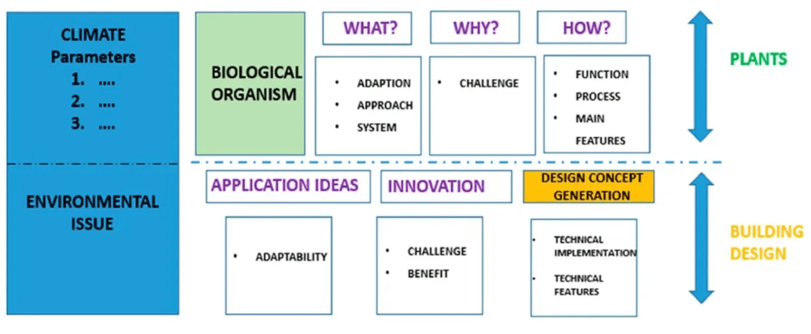
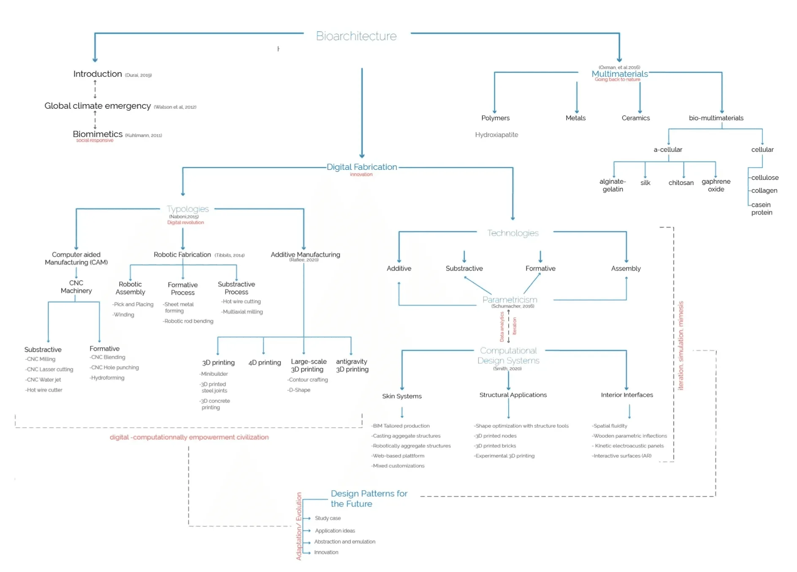
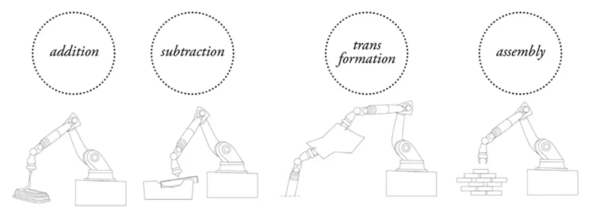
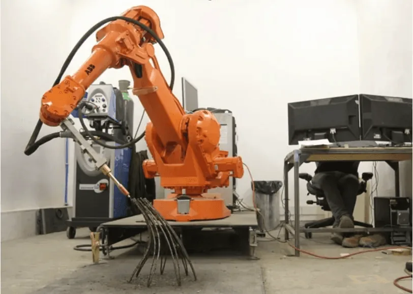
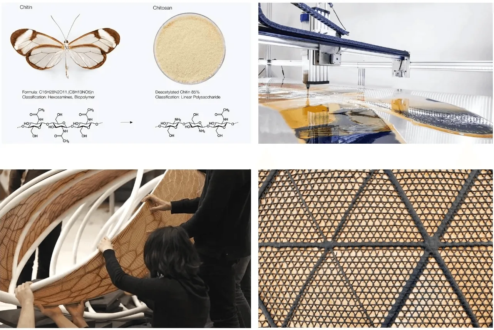
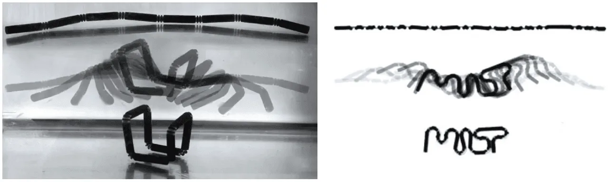

Recent technologies in the construction industry have demonstrated the potential for this industry to be cleaner and more environmentally friendly. Computational design technologies are a huge breakpoint that designers should take advantage of. In this entry we will analyse three different successful cases of the use of computational design systems; their advantages and disadvantages.
Three possible avenues of research lead this entry: the holy trinity of the new digital design era: technology, bio-materials, and data parametrics.
How the use of technology can save us from super densification in face of a global contingency? How can designers address the problem of the construction industry’s cabon footprint? Are there yet design patterns to follow for the architecture of the future? The methods used for this research are study case analysis, imageboard and observation; as well, a mind map was developed for the hierarchy understanding of all the concepts and main topics discussed in this paper. Three study
cases where meticulously review, from three different biomimetic approaches, three different authors from two different sides of the world, and with almost ten years of research that support their projects. In this criterion, new patterns for digital design
development are proposed that are relevant for the new generation of architects, designers and engineers that have the challenge of deal with a global emergency.
I. Introduction: Bioarchitecture in the face of climate emergency
Architecture since its origins as a discipline, has always been inspired by nature, even as its vernacular origins have always been a reflection of natural materials and the imitation of animal shelter constructions. In ancient Greece we saw the Caryatides element of a building, then later the use of a Corinthian column as a form to represent nature in architectural elements. Then later in the modern era, Gaudi responded with a more organic deconstruction of gothic, and lastly, in our contemporary era, Calatrava has evoked organic forms with his bone-skeleton structures. Nature has always been the role model for all arts, and in architecture, there are certain patterns appearing in in recent years, that are apprising the industry turning its way back to nature right now.
For instance in the digital era, we are moving forward to an authorless scheme of design, the methods that use computer-generated forms and shapes through algorithms, while referencing bio-organic elements, is becoming the natural path of evolution for design (Kuhlmann 2011). All these methods that this study portrays (bio-mimetics, parametricism, and digital fabrication) have something in common: evoking nature (Figure 1).

The digital era has also brought to designers the capability of mixing natural and artificial entities for the benefit of evolution and species continuation. The science-fiction of a robotic arm or a bionic eye has come to reality nowadays. Science is rapidly advocating an Artificial Intelligence era which many authors are convinced will be the 4th industrial revolution, and where all our capabilities as a critical, self-aware specie would be overpassed by machinery and robotics. Society in general should start questioning the use of concrete and steel in construction and start putting forward hybridised and biomorphic design to products, art, architecture, and urbanism. Moving the dwelling industry forward these new methods are the first step to the next civilization’s evolution. Dwelling (housing) is considered an extension of the human body itself, an extension of the tree’s shelter, an exoskeleton that protects and provides the living organisms inside for its development.
Everything points out that building in favor of nature instead of fighting with it, is the rightful pathway to evolution. The rightful pathway of a conservation of the nature and society as we known, is coming together, keeping the wellness of nature instead of tryingof domesticating.
The design Industry, just like any other industry in the world is configured to respond to the third industrial revolution: mass production. Human consumption, fast fashion, gentrification, deforestation and the farming is hurting our planet in a severe way, we may no encounter way back if we do not halt our consumption and waste; mass production has cost thousands of acres of deforestation, tons of CO2 expelled to the atmosphere, and millions of people living in poverty and un unhealthy environments because of the contamination of rivers and air.
Urban disciplines and city’s infrastructures, for example, that hold dwellings are a series of links that permit daily interactions, fulfilling human trade, work, education and health; if we start configuring these links accordingly to the data analytics of human interaction and the natural development, we would achieve better results than only designing just from the perspective of the urban planning discipline.

Data analytics plus data scripting, plus interactive design through parametrics could unfold more pragmatic solutions to the marginalization of the natural world that we are currently experiencing.
In recent years the world has been exposed to a serious of climate emergencies fromfloodings, bushfires, heatwaves, earthquakes, pandemics, deforestation, contamination all of them with a common denominator: over population. All these catastrophes have become more acute and recurrent than 100 years ago. The built environment along with urban planning have become the main disciplines that can trigger better solutions and the preservation of the earth as we know it. Architecture disciplines have been addressing these problems by reducing construction footprint minimising waste and recycling materials, but this has not worked effectively in fighting back climate crisis.
The complex problem of global warming has demonstrated that recycling and waste reduction are not the only part of the equation, but social problems are also involved.
Nature has taught us that organisms all belong together in a big chain of processes and complex relations that allow us continuance as a whole: no organism is capable of existing by itself or being self-sufficient, all species need to interact with each other in different ways to ensure continuance. The history of evolution has taught us that only the best-adapted organisms will survive.
As one of the few self-aware and conscious species in nature humans have to decide if we aim to evolve and preserve our civilisation as we know or we go extinct. We can take the course redirection and start changing our status quo in order to evolve; but most importantly, we have to take the tools and technology that are already available to start designing for the benefit of nature. Oxymoronic is the fact that human research in rocket science, space travel, mars colonisation, moon commercial traveling, are areas gaining more resources and funding, than our own planet preservation these days (Durai 2019).
II. Parametricism as the digital method to decode nature
Nature, as complex as we know it has been giving signs that can be decoded; the order of all these apparently chaotic and beautiful patterns can now be scripted. Parametricism has showcased responsiveness in helping to the evolution of architecture in recent years; famous projects are known for optimising their structure, energy consumption, and self-maintenance; they have been scripted, iterated, and even entirely designed by the method of parametricism.
Parametricism is the design methodology that can be compared with digital animation, both use the same digital tools, data analytics software, scripting processes, and programming. During this process a series of iterations, animations, and simulations have to occur in order to finalise with a digital model or sculpture. A new generation of designers are using digital design systems to articulate the complexity of society’s problems. What these designers aim to emulate is the fluidity of nature itself, to give a sense of seamless and elegance of order akin to the organism(Figure 3), but with a digital perspective (Schumacher 2009).
The informational and digital era that we are living are pushing towards the direction of decoding nature. How does it do? How to self-sustain? How to self-repair? How to self-feed? Environmental engineers, genetic scientists, microbiologists, architects, biological engineers, and information technology engineers are joining forces to understand how nature solve problems and what is the answer to evolution and survival. Computational revolution is bringing all domains of knowledge to the ideations of optimised techniques of structuring buildings, energy autonomy, self-maintenance, and zero emissions for the built environment (Schumacher 2016).
II.II. Digital fabrication technologies and typologies
The new digital era of digital fabrication is key to the development of the architecture of the future, and the evolution of human civilisation as we know. Digital fabrication in the design industry is crucial in the current situation; which makes us analyse what kinds or typologies of digital fabrication can direct us more efficiently to achieve a more environmental healthy evolution. Within the future of fabrication, different typologies are divided into four main categories: additive, subtractive, formative, and assembly (Figure 2).

In the additive process, each component is produced by the combination of different materials, aiming to create a unique component, for example 3D printing, which is a way of manufacture adding elements one by one to form a component. In the subtractive process, portions of a material or several materials are removed until the final component is formed, for instance, laser cutting, wooden carving, marble sculpting; in which one single entity (mono-material) is partially subtracted in order to give it a functional form. In the formative process, alteration or modification of several materials have to be performed,
the process happens while maintaining the initial cohesion in the materials; for example the robotic sheet forming, and the robotic rod bending; in both cases a series of metallic items undergo changes through a robotic arm work, aiming to chain the structureand shape of the items together, but the essence of the metal component remains the same. In the assembly process, the aim is to increase the cohesion of the materials through long-lasting connections of various components, for instance, welding, casting, or masonry (Naboni and Paoletti 2015).
In this study, we are going to focus on additive typologies that are the most widely known. It is most commonly called 3D printing and it has been developing quickly since the decade of the 1990s. 3D printing consists of the importing or modeling of 3D volumetric shapes digitally, and transform that model into a series of layers and their correspondent coordinates information; this information is then read by complex machinery that will extrude a homogeneous and static shape through a chemical and physical process.
The final object made of a wide range of materials will be remain static o its own (self-structured) without any additional mold process. The material range from both artificialand natural (organic) origins would give the printed object its underlying properties. The first materials to be used in 3D printing were liquid polymers that solidified after a heating process. We will continue discussing the materiality topic broadly in the nexts chapters.

II.III. The evolution of 3d printing in the construction industry.
The construction industry is one of the largest manufacturing sectors in the world, almost 30% of the world pollution comes from this sector alone. Rapidly deploying cities and densification are overturning extensive zones of vegetation cover. If we continue on this path, we might not have a turning point to the world as we know it today. The built environment seems to be adapting 3D printing as one of the solution assets to this problem; nowadays we can find 3D printed walls, 3D printed bricks, joints, and entire facades, we can even find large-scale building printed on-site in disaster zones, to shelter people that lost their homes in flooding, bushfires or droughts (Figure 3). 3D organic printing is the system that could undergo to revolutionise the design industry itself, for the benefit of the natural environment.
But 3D printed architecture is facing several problems on its way to becoming the construction system of the future. All of these problems are related to the scale factor of the building and the machinery limitations: large-scale items, large-scale systems, transportation solutions are needed for the construction industry. On the other hand, when it comes to materials the future looks very bright and promising. For instance, there are current investigations in developing organic materials in face to replace artificial made-up materials. Those materials are already present in nature with live organisms, completely suitable and producing zero emissions. From shrimp’s skin (casein protein) to apples and oranges pectin, silk from worms, organic components like chitin and chitosan (Figures 4–7), and chemical element like graphene oxide are forming an organic and compelling solution for the built environment (Oxman 2014).

II.IV. Aditive manufacturing and the future towards 4d printing
The light at the end of the tunnel for evolvable materials is 4D printing; in which materials can respond to external circumstances and effects for both the user and the environment.
As well as 3D printing, 4D printing belongs to the additive typology of digital fabrication; 4D printing has evolved from 3D printing itself adding to its underlying definition three main concepts: multimateriality, adaptability, and programmability.
In context of continuous of global calamities that we are experiencing, 4D printing comes with the advantage of adaptability in external environments. This means that the aim of a 4D printed object is directly connected to the material composition’s ability to perform in different and changing scenarios. The conspicuous future of 4D printing is showing signs of responding to external circumstances like temperature, pressure, humidity, biometrics, gravity, and sound, etc. This can be translated into a better performance of 4D printed objects, its duration, and preservability among the time; that conduct to a way of new possibilities into the mixing of organics and the digital world.
The programmability is the fourth dimension in the 4D printing scenario. So far we have known certain software, machinery, technology asset, and appliances that are programmable to perform task in a range of time; but, this is probably the first time that we are about to know (from currently developing research) a new printed structure with the capacity of change over time. Accordingly to Tibbits (2014) this can be described as an entity that goes:
"From one shape to another independently and directly off the print bed"
Skylar Tibbits, who is director of the self-assembly lab at the MIT (Massachusetts Institute of Technology) is currently conducting research into 4D printing future patterns, in which:
Materials are activated through ambient energies to come together on their own, reconfigure, mutate and replicate… these future programmable items will not just be thrown away when they fail; rather, they will correct and self-repair to meet new demands.
And even when become obsolete, they can self-disassemble for pure recyclability, breaking themselves down to their fundamental components to be reconstituted as new items with lifelike capabilities in the future (Tibbits 2014).

II.V. Bio-multimaterials: the next step to evolution
Multimaterial is the next step into the digital world of additive manufacturing, it consists of the adequate combination of two or more materials into one single extrusion. This extruded object will inherit the properties of the materials (multimaterial) that underlie on it. Recently, the biomedicine, spatial engineering, and electronic industries have started conducting research in bio-multimaterials.
According to Rafiee “Biomaterials can be extruded in the form of pastes, solutions, and hydrogels, all them can all be fed into 3D bioplotters. A temporary, sacrificial material may be needed to support the printed structure since viscous raw materials have low stiffness that may result in the collapse of complex structures (Rafiee 2020).
In the future will become available 4D print tissues, organs, repair deficiencies and grow entire body parts from single cells like the axolotl (Ambystoma mexicanum) does.
III. Discussion
From three academic and scientific sources, with a background of almost ten years of previous research and prototypes, the design community is directing their path to the architecture of the future; they acknowledge climate change, global contingencies and the earth compromised resources, that won’t last long if civilization keeps maintaining their consume status quo. This new perspectives of creating architecture are a glimpse, not only of a collaboration between nature and digital design; but also, a scope of how human colonization in the outer space can be in the future.
Computational design has fully demonstrated so far, that performance of raw materials can be potentialized to the maximum, can go from minimum to zero waste, and that artificial materiality is not benefiting as much as organic and natural materiality does.
Parametric design has portrayed that data analytics and interaction design can be used in order to optimize structure performance without sacrificing duration, mobility, the weight of the architectural object.
In the other hand, the biomimetic approach of design has tough us that nature has already invented everything in the universe, all the design patterns are out there, designers just have to be curious enough to rediscover them and start working within their inspiration.
Organic materiality is also a pathway to a more honest and sincere use of resources, once we have acknowledged that, we will be working and collaborating among nature rather than deploying their resources.
Living beings have shown their availability to complicity, complicity to work among humans, and robots as an act of symbiotic relationship. Co-design, co-manufacturing and co-habitation across species are an honest future pattern for the design of the future.
IV. Conclusions
The success of biomimesis on architecture and on any type of design portrays a sincere reality that is true on time and space of what our civilization is going through in this very moment, it depends on designers to perpetuate this success and not directing it into a brief state of the art.
Design should privilege nature order and advocate for a state in which all species come together benefiting each other, collaborate and scaffold to evolve together. Design should not disenfranchise any organism just for the benefit of human status quo or as we call it ‘civilization’. Designers should start growing wisdom in their creations, take advantage of all the medium and use it in favour of our planet.
These new ways of creating architecture do not have a reference before, we are being witnesses of the beginning of a new era in the design industry; with all of the advantages and disadvantages that they could have right now, but this is only the beginning stage.
There would be a lot more work in the future to look for, designers like Ben van Berkel, Joris Laarman, and Nicholas Turci (just to name a few) are already working in amazingly creative biomimetic projects, pioneers in a truly original design scheme pattern that privileges nature.
The challenges we are facing with climate change and natural contingencies showcase how wrongly supported our design framework is: how much of our design work is privileging nature upon consuming? We are currently building an external facade, a typology of work that is not being truly beneficial for our survival.
Bio-architecture, multimateriality, computational design and parametricism represent a torch for what is to come in the design pattern for the future. And as a designer, all this changes in the design’s philosophy are an inspiration in how my work should be directed.
In these difficult times that we are living, seems like the world is against us, the situation is difficult but at the moment we are keeping inspired and nourishing our knowledge.
- date published
- 9 Oct 2024
- reading time
- 10 min